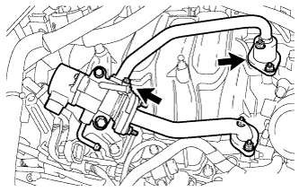
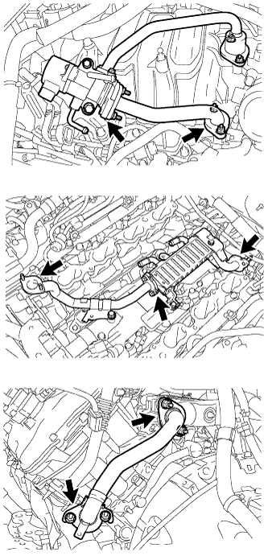

DTC P0401 Exhaust Gas Recirculation Flow Insufficient Detected |
| DTC No. | DTC Detection Condition | Trouble Area |
| P0401 | Change in the intake manifold pressure is small when the EGR valve is opened and closed during the idle fuel cut operation (2 trip detection logic). |
|
| Required sensors/Components (Main) | EGR valve assembly, manifold absolute pressure sensor |
| Required sensors/Components (Related) | Engine coolant temperature sensor, vehicle speed sensor |
| Frequency of operation | Once per driving cycle |
| Engine speed | 1050 to 1800 rpm |
| Vehicle speed | 20 km/h (12.5 mph) or more |
| Intake air temperature | -10°C (14°F) or higher |
| Manifold pressure change | Less than 1.8125 kPa (14 mmHg) |
| Engine speed | 1400 rpm |
| Tester Display | Description |
| NORMAL |
|
| ABNORMAL |
|
| INCOMPLETE |
|
| UNKNOWN |
|
| Data List | Change in Data List when Number of Steps is Increased Using Control the EGR Step Position Active Test |
| Engine Speed | Idle becomes rough |
| MAP | Pressure rises |
| 1.CHECK FOR ANY OTHER DTCS OUTPUT (IN ADDITION TO P0401) |
Connect the intelligent tester to the DLC3.
Turn the engine switch on (IG).
Turn the tester on.
Enter the following menus: Powertrain / Engine and ECT / DTC.
Read the DTCs.
| Result | Proceed to |
| DTC P0401 is output | A |
| DTC P0401 and other DTCs are output | B |
|
| ||||
| A | |
| 2.PERFORM ACTIVE TEST USING INTELLIGENT TESTER (OPERATE EGR VALVE) |
Connect the intelligent tester to the DLC3.
Start the engine and warm it up until the engine coolant temperature reaches 75°C (167°F) or higher.
Turn the tester on.
Enter the following menus: Powertrain / Engine and ECT / Active Test / Control the EGR Step Position.
Confirm that Throttle Idle Position is ON and check the engine idling condition and the value of MAP in the Data List while performing the Active Test.
| - | EGR Step Position (Active Test) | |
| Step 0 | Step 0 to 30 | |
| Idling condition | Steady idling | Idling changes from steady to rough idling or engine stalls |
| MAP (Data List) | - | MAP value is at least 10 kPa (75 mmHg) higher than when EGR valve is fully closed |
|
| ||||
| OK | |
| 3.INSPECT EGR VALVE ASSEMBLY |
Confirm that there are no deposits on the EGR valve.
Confirm that the EGR valve is closed.
|
| ||||
|
| ||||
| 4.REPLACE EGR VALVE ASSEMBLY |
Replace the EGR valve assembly (Click here).
| NEXT | |
| 5.CHECK FOR DEPOSIT (EGR VALVE ASSEMBLY TO INTAKE PORT) |
|  |
Check for exhaust leaks at each connection point.
Check for cracks, damage and blockage of the pipes between the intake manifold converter and EGR valve assembly.
Check for blockage due to deposits in the EGR valve and pipes.
|
| ||||
| OK | |
| 6.CHECK FOR DEPOSIT (EXHAUST MANIFOLD CONVERTER TO EGR VALVE ASSEMBLY) |
|  |
Check for exhaust leaks at each connection point.
Check for cracks, damage and blockage of the pipes between the exhaust manifold converter and EGR valve assembly.
Check for blockage due to deposits in the EGR valve and pipes.
|
| ||||
| OK | |
| 7.INSPECT EGR COOLER ASSEMBLY |
Check for blockage in the EGR cooler assembly.
|
| ||||
| OK | |
| 8.READ VALUE USING INTELLIGENT TESTER (MANIFOLD ABSOLUTE PRESSURE SENSOR) |
Connect the intelligent tester to the DLC3.
Turn the engine switch on (IG).
Turn the tester on.
Enter the following menus: Powertrain / Engine and ECT / Data List / MAP.
Read the MAP value.
| Switch Condition | Tester Display |
| Engine switch on (IG) | 80 to 110 kPa (600 to 825 mmHg) |
|
| ||||
|
| ||||
| 9.CHECK INTAKE SYSTEM |
Check the intake system for vacuum leaks (Click here).
|
| ||||
| OK | |
| 10.REPLACE MANIFOLD ABSOLUTE PRESSURE SENSOR |
Replace the manifold absolute pressure sensor (Click here).
| NEXT | |
| 11.CONFIRM WHETHER MALFUNCTION HAS BEEN SUCCESSFULLY REPAIRED |
Connect the intelligent tester to the DLC3.
Turn the engine switch on (IG).
Turn the tester on.
Clear the DTCs (Click here).
Turn the engine switch off and wait for 30 seconds.
Turn the engine switch on (IG) and turn the tester on.
Start the engine and warm it up until the engine coolant temperature reaches 75°C (167°F) or higher.
Drive the vehicle at 60 km/h (37 mph) for 5 minutes or more.
Idle the engine for 30 seconds or more.
Drive the vehicle at 60 km/h (37 mph).
Perform fuel cut operation for 5 seconds or more with the accelerator pedal fully released.
Enter the following menus: Powertrain / Engine and ECT / DTC / Pending.
Read the pending DTCs.
If a pending DTC is output, the system is malfunctioning.
Enter the following menus: Powertrain / Engine and ECT / Utility / All Readiness.
Input the DTC: P0401.
Check the DTC judgment result.
| Tester Display | Description |
| NORMAL |
|
| ABNORMAL |
|
| INCOMPLETE |
|
| UNKNOWN |
|
| NEXT | ||
| ||